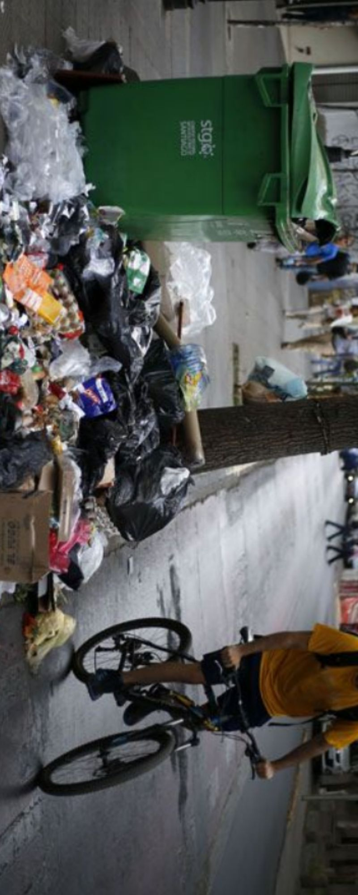

Semana 7
CLASE PRESENCIAL
En esta clase hicimos una dinamica con imagenes que el profesor nos mostraba, en las imagenes a primera vista y en una imagenes recortada podiamos observar que habia más a fondo de lo que veiamos a primera vista, por ejemplo nos mostro una imagen de un monton de tierra en el piso, dedujimos que habia un tacho cerca, pero al ampliar la imagen pudimos ver que sí había, y habia uno grande encima, sin embargo muchas veces a la gente no le importa eso, nuetsra mision en esta clase era buscar solucines ya sea inteligentes o no que contibuyan a mejorar estos casos.